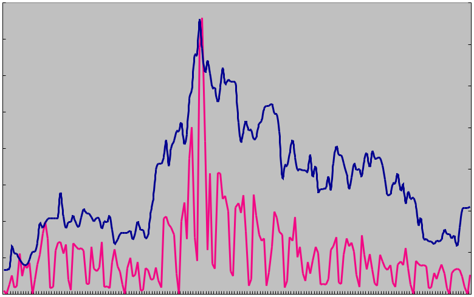

【Memo】「英辞郎 on the WEB」にも急上昇キーワードはあるの？
■ 「英辞郎 on the WEB」には、日々大量の検索キーワードの問い合わせが送られてきますが、キーワードランキングの集計をおこなうと「不動のトップランキングキーワード」が存在していることに気づきます。例えば、provide や 対応、indicate、confirm などの単語です。これらは、使用頻度も高く、さまざまな訳し方ができたり、例文も豊富だったりするせいか、常にランキングの上位に位置しています。多少の変動はありますが、この傾向は何年も前から変わることがありません（詳しくは、【Memo】「英辞郎 on the WEB」の検索キーワードランキングをご参照ください）。
年末になるといろいろなサイトから「今年の検索キーワードランキング」といったランキングが発表され、その年に話題になった人物や、事件、流行語などがそのリストを飾ります。しかし、「英辞郎 on the WEB」の検索キーワードは、そうしたトレンドとは連動しているということはあまりないと考えてよさそうです。
『英辞郎』データへの新語の登録は積極的におこなわれていますが、いま話題の有名人の名前の網羅に注力しているわけではありませんし、国内外の事件などをリアルタイムに追いかけているわけでもありません。また、英和・和英の辞書・対訳データベースのサービスという性格上、そうした情報が求められているとも思えません……などと、検索キーワードをテーマにプレスリリースを出したいと考えている広報担当者に話をすると、いつもがっかりされます。
■ とはいえ、「英辞郎 on the WEB」をご愛顧いただいている方々には、数多くのビジネスパーソンの方々もいらっしゃいますので、そうしたキーワードであれば、なにか有意な関連性が見つかるのではないかと思い、いくつかのキーワードに的を絞って検索していたところ、それらしいものが見つかりました。
円高 というキーワードがその一例です。左のグラフは、ー が、円高 の日々の検索回数を示しています。それに対し、ー は、日々の対米ドルの円相場の変動を示したもの※です。この 2 つの事象の変化を 2008 年 1 月 1 日から、同年 6 月 30 日まで追ってみたものになります。
ぴったり一致しているとは言えませんが、なんとなくグラフの波形が似ていることにお気づきいただけるでしょう。注目していただきたいのは、この調査期間中の最高値（2008/03/17：1 USD = 96.88 円）となった翌日に 円高 の検索回数も最高値を示しているという現象です。「英辞郎 on the WEB」は、金融関係の企業にお勤めの方や、商社やメーカーといった輸出入に関わるようなお仕事をされている方々からもご利用いただいていることがこうした傾向を生んでいるのではないかと推測されます。
※ 対米ドルの日本円の為替レートを逆数にして、円高であれば Y 軸の値が大きくなるように加工しています。
この記事を書いている 2009 年 4 月時点では、相変わらずの円高状態（1 USD = 100 円弱）ではありますが、2009 年 2 月ごろの 90 円を切った時期との比較で言えば円安傾向です。これにともない、「円高」というキーワードでの検索回数は減少してきているようです。
■ また、ガソリン価格の高騰により航空料金に大きな影響を与えた燃油サーチャージも本格的な夏期休暇を前にした 2008 年 6 月あたりで検索回数が急上昇しました。同年 9 月のリーマンショック以降では、金融機関救済策に反対するデモ行動がテレビで報道され、そのプラカードに書かれていた bailout（プラカードには “NO BAILOUT!” などと書かれていました）などの検索キーワードの検索回数の急増が観測されました。
こうしたキーワードは、「いま話題になっている ◯◯◯ って、英語でなんて言うんだろう」、「そういえば ◯◯◯ って、どんな綴りなんだろう」といった一過性の興味で検索されているようで、いずれもあっという間に検索回数は激減するというパターンをたどることが多いようです。円高 のような日々の業務に継続的に関連するキーワードと違い、こうした突発的な話題で興味を持たれたキーワードには持続力がないということが言えそうです。これは、一般的なウェブ検索サービスの検索キーワードランキングと類似する傾向でしょう。